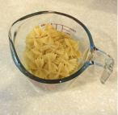

back
Fall Harvest Pasta Recipe
next
Step 2:
Prepare the Pasta Ingredients
1. In a large pot, bring water to a boil.
2. Insert your bow-tie pasta and cook for 9-10 minutes.
3. On a cutting board, chop the onions into tiny pieces.
4. Mince the garlic.
Tip:
To prevent sticking and add some flavor, mix in some olive oil and salt to your pasta water!
